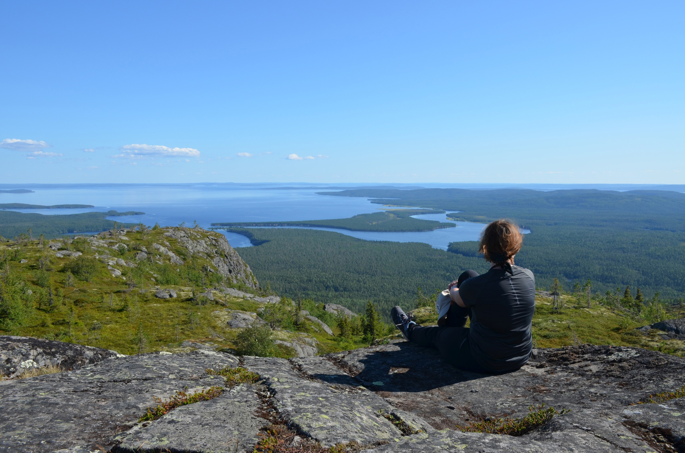

Обо мне
Привет! Меня зовут Ольга, и я — человек с неугомонной энергией!
Инженер путей сообщения по образованию, логист и таможенный специалист по факту, а теперь – веб-разработчик по призванию. Когда привычная карьера стала слишком предсказуемой, я решила, что пора добавить немного кода и творчества в свою жизнь. И знаете что? Это оказалось именно тем, что я искала! Теперь создаю сайты и радуюсь, что в этой профессии всегда есть чему учиться и что осваивать.
Но это ещё не всё! Помимо того, что я примерная жена и мама двоих детей, моя активность держит в тонусе всю семью. Наши главные хобби — вылазки на природу, путешествия и тёплые встречи с друзьями. Живя в Петербурге, знаете ли, такие вещи помогают не сойти с ума от перепадов погоды и ритма жизни.
А ещё я веду канал о путешествиях на автомобиле. Там нет пафоса и лишних сложностей — только настоящие истории от обычных людей. Так что, если вам интересно заглянуть в мой мир – от кода до автопутешествий – добро пожаловать!